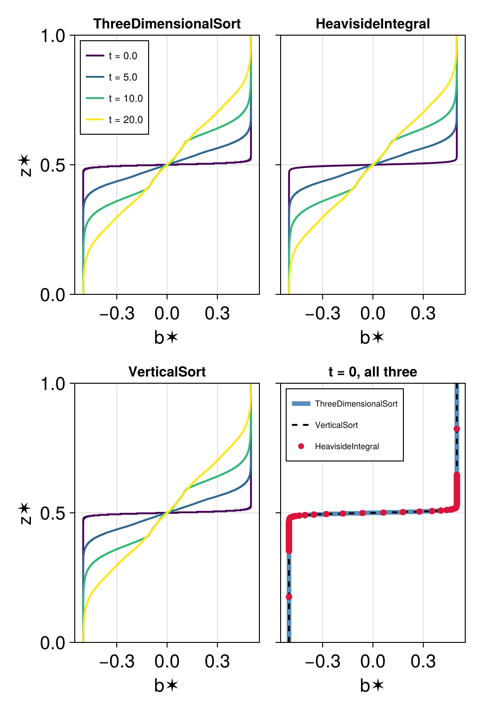
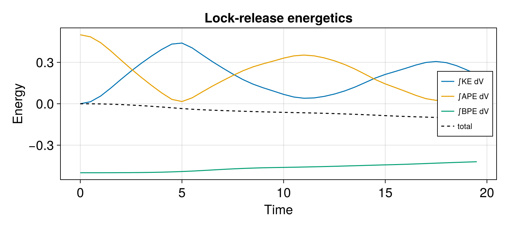
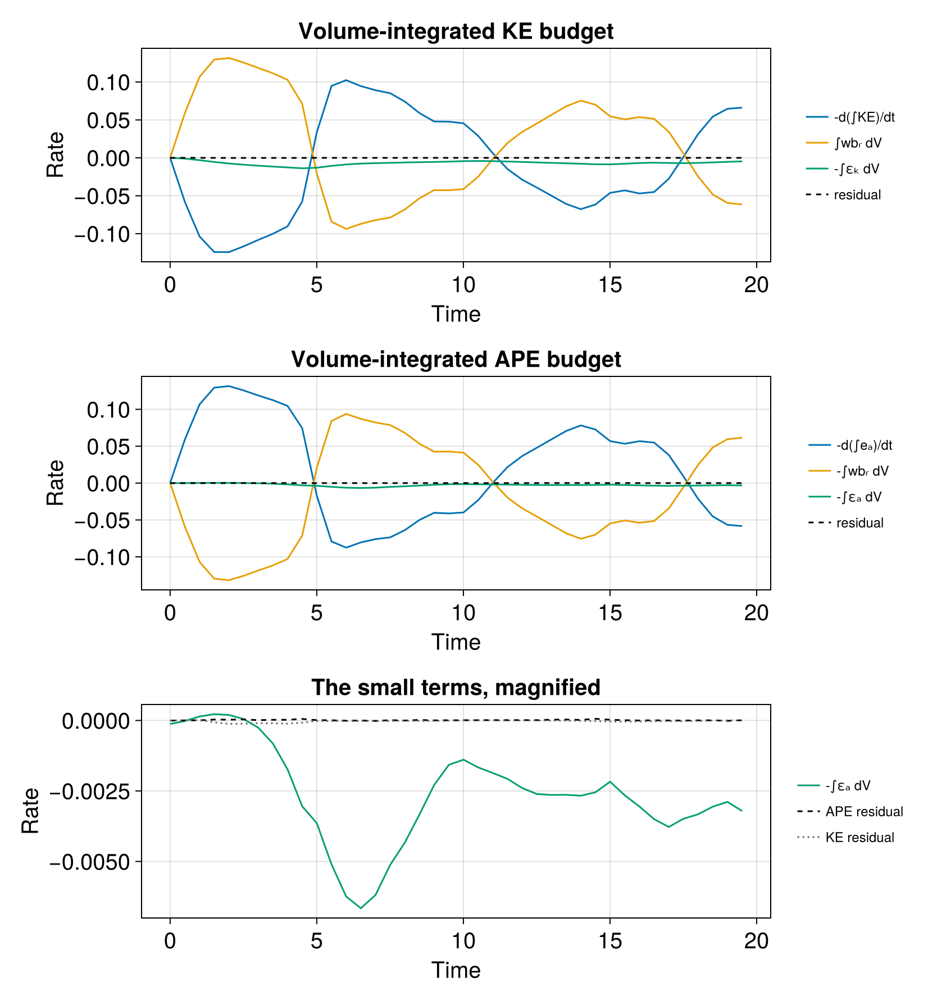
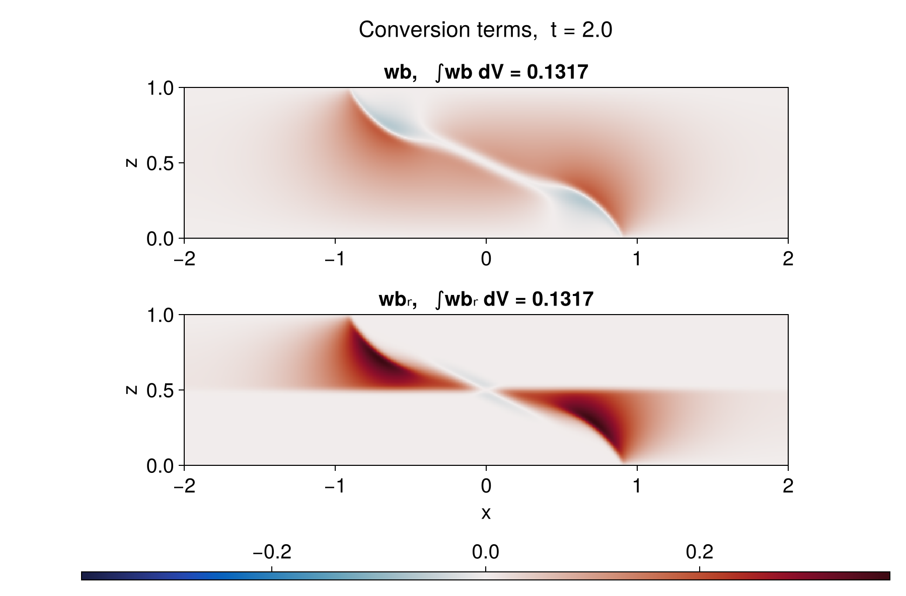

Lock release and the sorted reference state
In this example we run a two-dimensional lock release simulation and use it to watch the available potential energy and kinetic energy evolve. Along the way we build the reference profile with each of the four methods Oceanostics provides and close the volume-integrated available potential energy and kinetic energy budgets against the two dissipation rates and the buoyancy production that connects them.
Before starting, make sure you have the required packages installed for this example, which can be done with
using Pkgpkg"add Oceananigans, Oceanostics, CairoMakie"Model and simulation setup
using OceananigansWe work with nondimensional quantities. The buoyancy jump across the lock Δb and the channel depth H set the buoyancy velocity U = √(Δb H) / 2, which is the classic lock-release front speed and the only velocity scale in the problem. The channel is four times as long as it is deep:
Δb = 1 # buoyancy jump across the lockH = 1 # channel depthLx = 4H # channel lengthU = √(Δb * H) / 2 # buoyancy velocity0.5The domain is walled at both ends and at top and bottom, so the fronts eventually reflect and the channel fills with a mixed intermediate layer. That is what we want here: it drives the reference profile all the way from a step to something smooth. The grid is isotropic at Δ = H/Nz:
Nz = 128grid = RectilinearGrid(size = (4Nz, Nz), x = (-Lx/2, Lx/2), z = (0, H), topology = (Bounded, Flat, Bounded))512×1×128 RectilinearGrid{Float64, Bounded, Flat, Bounded} on CPU with 3×0×3 halo
├── Bounded x ∈ [-2.0, 2.0] regularly spaced with Δx=0.0078125
├── Flat y
└── Bounded z ∈ [0.0, 1.0] regularly spaced with Δz=0.0078125The closure and the advection scheme are chosen to facilitate closing the budgets at the end: we choose a centered scheme, which adds no dissipation of its own and constant diffusivity with ν and κ large enough that the grid resolves whatever the flow makes of the front.
ν = κ = 5e-4model = NonhydrostaticModel(grid; timestepper = :RungeKutta3, advection = Centered(order=4), # Non-dissipative scheme closure = ScalarDiffusivity(; ν, κ), buoyancy = BuoyancyTracer(), tracers = :b);The lock itself: buoyant fluid on the right, dense fluid on the left, separated by a thin interface. Smoothing the step over δ keeps the initial condition off the grid scale:
δ = 4 * minimum_xspacing(grid) # interface thickness, four cellslock_release(x, z) = (Δb / 2) * tanh(x / δ)set!(model, b = lock_release)We create a simulation with conservative choices for the initial time step and the CFL number. Since we anticipate the flow to be fairly viscous, we also set a target diffusive CFL:
simulation = Simulation(model, Δt = 0.1 * minimum_xspacing(grid) / U, stop_time = 20)conjure_time_step_wizard!(simulation, IterationInterval(2), cfl = 0.7, diffusive_cfl = 0.2)using Oceanosticsprogress = ProgressMessengers.BasicMessenger()simulation.callbacks[:progress] = Callback(progress, IterationInterval(500));Diagnostics
We build one z✶ per method and write all of them for later comparison. They are ordinary Fields that re-sort themselves whenever they are computed, so they can be passed to an output writer. Given that the reference height calculation is nonlocal, it is generally a computationally-heavy operation and its cost grows faster than the number of cells: see Computational cost per method for how different methods compare and how they scale.
b = model.tracers.bz✶_ranked = reference_height(model, method = ThreeDimensionalSort())z✶_heaviside = reference_height(model, method = HeavisideIntegral())z✶_lookup = reference_height(model, method = ProfileLookup())z✶_column = reference_height(model, method = VerticalSort())b✶_column = reference_buoyancy(z✶_column)1×1×65536 Field{Center, Center, Center} on RectilinearGrid on CPU
├── grid: 1×1×65536 RectilinearGrid{Float64, Bounded, Flat, Bounded} on CPU with 1×0×3 halo
├── boundary conditions: FieldBoundaryConditions
│ └── west: ZeroFlux, east: ZeroFlux, south: Nothing, north: Nothing, bottom: ZeroFlux, top: ZeroFlux, immersed: Nothing
├── operand: SortedBuoyancyState of 1×1×65536 Field{Center, Center, Center} on RectilinearGrid on CPU
├── status: time=0.0
└── data: 3×1×65542 OffsetArray(::Array{Float64, 3}, 0:2, 1:1, -2:65539) with eltype Float64 with indices 0:2×1:1×-2:65539
└── max=0.5, min=-0.5, mean=0.0Both background and available potential energies are built from the same reference height, so we share one rather than letting each diagnostic sort the domain for itself. Note that APE here is the local available potential energy (as defined by Holliday & McIntyre (1981)) and it should always be non-negative.
We build one APE calculation per method. Three of the four answer on the model grid and give a map over the domain, which is what the animation below compares. VerticalSort is given on the sorted column, so its APE is ordered by rank rather than by position and is not a map of the flow; it is written anyway because the volume integral comes out the same whichever method builds the reference state. ProfileLookup is that same column read back onto the model grid, matching each cell to the profile through its buoyancy rather than through where it came from.
APE_ranked = AvailablePotentialEnergy(model, z✶_ranked)APE_heaviside = AvailablePotentialEnergy(model, z✶_heaviside)APE_lookup = AvailablePotentialEnergy(model, z✶_lookup)APE_column = AvailablePotentialEnergy(model, z✶_column)KE = KineticEnergy(model)∫BPE = Integral(BackgroundPotentialEnergy(model, z✶_ranked))∫KE = Integral(KE)∫APE = Integral(APE_ranked)∫APE_heaviside = Integral(APE_heaviside)∫APE_lookup = Integral(APE_lookup)∫APE_column = Integral(APE_column)Integral of BinaryOperation at (Center, Center, Center) over dims (1, 2, 3)
└── operand: BinaryOperation at (Center, Center, Center)
└── grid: 1×1×65536 RectilinearGrid{Float64, Bounded, Flat, Bounded} on CPU with 1×0×3 haloBudget terms
In a closed box the volume-integrated kinetic and available potential energies exchange through a single term and each drains through a dissipation of its own,
\[\frac{d}{dt}\int e_k\, dV = +\int w b_r\, dV - \int \varepsilon_k\, dV, \qquad \frac{d}{dt}\int e_a\, dV = -\int w b_r\, dV - \int \varepsilon_a\, dV .\]
Advection and the pressure gradient integrate to zero for an incompressible flow in a closed box, and the walls are free-slip and insulating, so the viscous and diffusive fluxes leave nothing at the boundary either. What survives is the exchange between the two reservoirs and the two sinks.
Note that the exchange term is written $w b_r$ (AvailablePotentialToKineticEnergyConversion) in both budgets, not $wb$ (PotentialToKineticEnergyConversion), where $b_r = b - b^\star(z)$ is the buoyancy anomaly relative to the reference profile at the parcel's own height, representing an exchange between kinetic energy and available potential energy rather than potential energy. This is possible in the KE equation since $b^\star$ is a function of height alone, so the hydrostatic pressure that goes with it, $p^\star(z)$ with $\partial p^\star/\partial z = b^\star$, has no horizontal gradient and can be absorbed into the pressure term. That said, both terms are equal in an integrated sense (as we'll show below).
The dissipation term $\varepsilon_a$ is the contraction of the closure's diffusive buoyancy flux with the gradient of the displacement potential $\Upsilon = z^\star - z$:
\[\varepsilon_a = -q_i\, \partial_i \Upsilon\]
where $q_i$ is whatever diffusive buoyancy flux the closure supplies.
We hand $\varepsilon_a$ the HeavisideIntegral reference height already built above rather than letting it sort the domain again, and that method rather than another because $\varepsilon_a$ differentiates the map $\Upsilon$: Eq. (11) of Winters et al. is the one that makes $z^\star$ a function of buoyancy alone, so tied cells do not spread $z^\star$ over the depth they fill and show up in $\nabla \Upsilon$ as grid-scale noise.
εₐ = AvailablePotentialEnergyDissipationRate(model, z✶_heaviside)εₖ = KineticEnergyDissipationRate(model)wbᵣ = AvailablePotentialToKineticEnergyConversion(model, z✶_heaviside)AvailablePotentialToKineticEnergyConversion KernelFunctionOperation at (Center, Center, Center)
├── grid: 512×1×128 RectilinearGrid{Float64, Bounded, Flat, Bounded} on CPU with 3×0×3 halo
├── kernel_function: ape_to_ke_conversion_ccc (generic function with 1 method)
└── arguments: ("Field", "KernelFunctionOperation")
└── computes: available potential to kinetic energy conversion wbᵣLet's also calculate the exchange between kinetic and potential energy $wb$ for comparison along with integrals for all terms
wb = PotentialToKineticEnergyConversion(model)∫wbᵣ = Integral(wbᵣ)∫wb = Integral(wb)∫εₖ = Integral(εₖ)∫εₐ = Integral(εₐ)using NCDatasetsfilename = "lock_release""lock_release"Two writers. The fields writer carries the maps, and a single NetCDFWriter copes with the two grids they live on: the model-grid fields are written against x and z, and the column's against its own N-cell vertical axis.
outputs = (; b, KE, APE_ranked, APE_heaviside, APE_lookup, APE_column, z✶_ranked, z✶_heaviside, z✶_lookup, z✶_column, b✶_column, wb, wbᵣ)simulation.output_writers[:fields] = NetCDFWriter(model, outputs, filename = joinpath(@__DIR__, filename), schedule = TimeInterval(0.5), overwrite_existing = true)NetCDFWriter scheduled on TimeInterval(500 ms):
├── filepath: lock_release.nc
├── dimensions: time(0), z_aac_grid1(128), x_faa_grid1(513), x_caa_grid1(512), z_aaf_grid1(129), z_aaf_grid2(65537), x_caa_grid2(1), z_aac_grid2(65536), x_faa_grid2(2)
├── 13 outputs: (APE_ranked, z✶_lookup, KE, b, z✶_column, APE_heaviside, APE_lookup, b✶_column, wbᵣ, z✶_heaviside, z✶_ranked, wb, APE_column)
├── array_type: Array{Float32}
├── file_splitting: NoFileSplitting
└── file size: (file not yet created)The budget writer carries only the volume integrals, which are cheap next to the maps, on ConsecutiveIterations(TimeInterval(0.5)). That schedules a second sample one model step after each scheduled time, which lets us finite-difference $d/dt$ across that step instead of accumulating it. The ∫APE_heaviside written here is the tendency term that pairs with $\varepsilon_a$, since the two come off the same sort.
integrals = (; ∫BPE, ∫KE, ∫APE, ∫APE_heaviside, ∫APE_lookup, ∫APE_column, ∫wb, ∫wbᵣ, ∫εₖ, ∫εₐ)simulation.output_writers[:budget] = NetCDFWriter(model, integrals, filename = joinpath(@__DIR__, filename * "_budget"), schedule = ConsecutiveIterations(TimeInterval(0.5)), overwrite_existing = true)NetCDFWriter scheduled on ConsecutiveIterations(TimeInterval(500 ms), 1):
├── filepath: lock_release_budget.nc
├── dimensions: time(0), z_aac_grid1(128), x_faa_grid1(513), x_caa_grid1(512), z_aaf_grid1(129), z_aaf_grid2(65537), x_caa_grid2(1), z_aac_grid2(65536), x_faa_grid2(2)
├── 10 outputs: (∫εₐ, ∫APE_column, ∫wbᵣ, ∫BPE, ∫APE_lookup, ∫APE, ∫KE, ∫APE_heaviside, ∫wb, ∫εₖ)
├── array_type: Array{Float32}
├── file_splitting: NoFileSplitting
└── file size: (file not yet created)Run the simulation
run!(simulation)[ Info: Initializing simulation...
[ Info: [000.00%] time = 0 seconds, Δt = 1.719 ms, walltime = 1.079 minutes, advective CFL = 0, diffusive CFL = 0.014
[ Info: ... simulation initialization complete (1.129 minutes)
[ Info: Executing initial time step...
[ Info: ... initial time step complete (3.357 seconds).
[ Info: [018.72%] time = 3.743 seconds, Δt = 6.460 ms, walltime = 2.472 minutes, advective CFL = 0.7, diffusive CFL = 0.053
[ Info: [034.14%] time = 6.828 seconds, Δt = 7.120 ms, walltime = 2.721 minutes, advective CFL = 0.7, diffusive CFL = 0.058
[ Info: [051.02%] time = 10.204 seconds, Δt = 7.234 ms, walltime = 2.978 minutes, advective CFL = 0.7, diffusive CFL = 0.059
[ Info: [071.02%] time = 14.203 seconds, Δt = 6.181 ms, walltime = 3.257 minutes, advective CFL = 0.7, diffusive CFL = 0.051
[ Info: [088.45%] time = 17.690 seconds, Δt = 6.617 ms, walltime = 3.515 minutes, advective CFL = 0.7, diffusive CFL = 0.054
[ Info: Simulation is stopping after running for 2.642 minutes.
[ Info: Simulation time 20 seconds equals or exceeds stop time 20 seconds.
Reference profile
The reference state is what you get by rearranging every parcel adiabatically into the state of minimum potential energy: rank the cells by buoyancy and stack them from the bottom of the domain up. The height a parcel lands at is its reference height $z^\star$, and plotting the buoyancy that goes with it gives the reference profile $b^\star(z^\star)$ — the stratification the flow would have if all of its available potential energy were released.
Everything needed is already in the file. For the column the profile is written as it stands. For the two model-grid methods, z✶ and b are both maps over the cells, so pairing them and ordering by z✶ recovers the same profile; that reordering is all the "post-processing" amounts to.
using Oceananigans.Fields: interiorfilepath = simulation.output_writers[:fields].filepathb_t = FieldTimeSeries(filepath, "b") # for the movie belowds = NCDataset(filepath)times = ds["time"][:]B = ds["b"][:, :, :] # (x, z, time); y is Flat, so it is droppedZ3 = ds["z✶_ranked"][:, :, :]ZH = ds["z✶_heaviside"][:, :, :]Z1 = ds["z✶_column"][:, :, :] # (1, N, time): the column keeps the model's Flat y, dropped hereB1 = ds["b✶_column"][:, :, :]close(ds)# pair a reference-height map with the buoyancy map and order by z✶mapped_profile(Z, n) = (h = vec(Float64.(Z[:, :, n])); p = sortperm(h); (vec(Float64.(B[:, :, n]))[p], h[p]))# the column is already ordered, so it is read straight offcolumn_profile(n) = (vec(Float64.(B1[:, :, n])), vec(Float64.(Z1[:, :, n])))snapshot_times = [0, 5, 10, 20]snapshots = [argmin(abs.(times .- t)) for t in snapshot_times]methods = ("ThreeDimensionalSort" => n -> mapped_profile(Z3, n), "HeavisideIntegral" => n -> mapped_profile(ZH, n), "VerticalSort" => column_profile)# `profiles[name][k]` is the `(b✶, z✶)` pair for method `name` at the `k`-th snapshotprofiles = Dict(name => [build(n) for n in snapshots] for (name, build) in methods);┌ Warning: Reading boundary conditions from NetCDF files is not supported for FieldTimeSeries. Using default FieldBoundaryConditions for `grid` and `location`.
└ @ OceananigansNCDatasetsExt ~/.julia/packages/Oceananigans/Sm7zf/ext/OceananigansNCDatasetsExt/output_readers.jl:44
All three describe the same reference state, so wherever the buoyancy field is continuous their profiles coincide. They part ways only where cells are tied at exactly the same buoyancy, and a lock is the extreme case: the initial condition saturates to ±Δb/2 away from the interface, leaving just a few dozen distinct buoyancies across tens of thousands of cells.
n_distinct(n) = length(unique(vec(Float64.(B[:, :, n]))))@info "distinct buoyancies: $(n_distinct(snapshots[1])) at t = 0, " * "$(n_distinct(snapshots[end])) at t = $(times[snapshots[end]]), of $(prod(size(grid))) cells"[ Info: distinct buoyancies: 72 at t = 0, 64922 at t = 20.0, of 65536 cells
The profile gets a figure of its own: one panel per method, each showing b★(z✶) at the four times above. It starts as a step, two blocks of uniform buoyancy stacked one on the other, and mixing erodes it into a smooth stratification.
using CairoMakieset_theme!(Theme(fontsize = 20))fig = Figure();colors = cgrad(:viridis, length(snapshots); categorical = true)for (m, (name, _)) in enumerate(methods) row, col = fldmod1(m, 2) # fill a 2×2 grid row by row local ax = Axis(fig[row, col]; xlabel = "b✶", title = name, width = 200, height = 280, ylabel = col == 1 ? "z✶" : "", yticklabelsvisible = col == 1, titlesize = 15) ylims!(ax, 0, H) for (s, n) in enumerate(snapshots) b✶, z✶ = profiles[name][s] lines!(ax, b✶, z✶; color = colors[s], linewidth = 2, label = "t = $(round(times[n], digits=1))") end m == 1 && axislegend(ax; position = :lt, labelsize = 11)endPrecompiling packages...
585.5 ms ✓ FilePathsGlobExt (serial)
1 dependency successfully precompiled in 1 seconds
Precompiling packages...
487.0 ms ✓ DistancesChainRulesCoreExt (serial)
1 dependency successfully precompiled in 0 seconds
Precompiling packages...
1079.0 ms ✓ TaylorSeriesIAExt (serial)
1 dependency successfully precompiled in 1 seconds
Precompiling packages...
7076.4 ms ✓ OceananigansMakieExt (serial)
1 dependency successfully precompiled in 7 seconds
The fourth panel puts the three side by side at t = 0, where they disagree the most. HeavisideIntegral is drawn as markers rather than a line because its z✶ takes only as many distinct values as there are distinct buoyancies, which is a few dozen here against 65536 cells.
row0, col0 = fldmod1(length(methods) + 1, 2)ax0 = Axis(fig[row0, col0]; xlabel = "b✶", title = "t = 0, all three", width = 200, height = 280, ylabel = col0 == 1 ? "z✶" : "", yticklabelsvisible = col0 == 1, titlesize = 15)ylims!(ax0, 0, H)b✶_r, z✶_r = profiles["ThreeDimensionalSort"][1]b✶_c, z✶_c = profiles["VerticalSort"][1]b✶_h, z✶_h = profiles["HeavisideIntegral"][1]lines!(ax0, b✶_r, z✶_r; linewidth = 5, color = (:steelblue, 0.9), label = "ThreeDimensionalSort")lines!(ax0, b✶_c, z✶_c; linewidth = 2, linestyle = :dash, color = :black, label = "VerticalSort")scatter!(ax0, b✶_h, z✶_h; markersize = 9, color = :crimson, label = "HeavisideIntegral")axislegend(ax0; position = :lt, labelsize = 9)resize_to_layout!(fig)save("lock_release_profiles.png", fig)The three method panels are identical except while the lock is still intact, and that difference is informative rather than an error. At t = 0 almost every cell is tied with thousands of others at one of two buoyancies, and the methods place tied cells differently. ThreeDimensionalSort and VerticalSort give each cell its own slot in the stack, so they draw the true step spanning the full depth. HeavisideIntegral instead collapses each buoyancy class onto the mid-height of the layer it fills, which is what makes z✶ a function of buoyancy alone and a clean field to map, but leaves it unable to represent a step as a profile: its z✶ only ever reaches the mid-heights of the two blocks, about a sixth of the depth in from each boundary. Once mixing has made the buoyancy field continuous the ties vanish and all three agree to within a grid cell.

Flow animation and local energies
The movie sets the flow beside the energy it carries: buoyancy, kinetic energy, and the local eₐ built from each of the three methods that answer on the model grid.
KE_t = FieldTimeSeries(filepath, "KE")APE3_t = FieldTimeSeries(filepath, "APE_ranked")APEH_t = FieldTimeSeries(filepath, "APE_heaviside")APEL_t = FieldTimeSeries(filepath, "APE_lookup")fig3 = Figure(size = (900, 1010))n = Observable(1)# `DataAspect` draws the channel at its true proportions, so a `4H` by `H` domain comes out four times# as wide as it is deep. The width follows from the height, rather than both being set independently.panel_kwargs = (ylabel = "z", height = 190, aspect = DataAspect())ax_b = Axis(fig3[2, 1]; title = "Buoyancy b", panel_kwargs...)ax_KE = Axis(fig3[4, 1]; title = "Kinetic energy", panel_kwargs...)ax_E3 = Axis(fig3[6, 1]; title = "eₐ, ThreeDimensionalSort", panel_kwargs...)ax_EH = Axis(fig3[8, 1]; title = "eₐ, HeavisideIntegral", panel_kwargs...)ax_EL = Axis(fig3[10, 1]; title = "eₐ, ProfileLookup", xlabel = "x", panel_kwargs...)bₙ = @lift b_t[$n]KEₙ = @lift KE_t[$n]E3ₙ = @lift APE3_t[$n]EHₙ = @lift APEH_t[$n]ELₙ = @lift APEL_t[$n]# `eₐ` and the kinetic energy are both sign-definite, so they get one-sided ranges set from their own# peak over the run; the buoyancy keeps the symmetric range used above.KE_lim = maximum(maximum(interior(KE_t[k])) for k in 1:length(times))Ea_lim = maximum(maximum(interior(APE3_t[k])) for k in 1:length(times))hm_b = heatmap!(ax_b, bₙ; colormap = :balance, colorrange = (-Δb/2, Δb/2))Colorbar(fig3[3, 1], hm_b; vertical = false, height = 8)energy_options = (; colormap = :magma, colorrange = (0, 0.5Ea_lim))hm_KE = heatmap!(ax_KE, KEₙ; energy_options...)Colorbar(fig3[5, 1], hm_KE; vertical = false, height = 8)hm_E3 = heatmap!(ax_E3, E3ₙ; energy_options...)Colorbar(fig3[7, 1], hm_E3; vertical = false, height = 8)hm_EH = heatmap!(ax_EH, EHₙ; energy_options...)Colorbar(fig3[9, 1], hm_EH; vertical = false, height = 8)hm_EL = heatmap!(ax_EL, ELₙ; energy_options...)Colorbar(fig3[11, 1], hm_EL; vertical = false, height = 8)title = @lift "Lock release, t = " * string(round(times[$n], digits = 1))Label(fig3[1, 1], title, fontsize = 22, tellwidth = false)resize_to_layout!(fig3)@info "Animating..."record(fig3, "lock_release.mp4", 1:length(times), framerate = 8) do i n[] = iend┌ Warning: Reading boundary conditions from NetCDF files is not supported for FieldTimeSeries. Using default FieldBoundaryConditions for `grid` and `location`.
└ @ OceananigansNCDatasetsExt ~/.julia/packages/Oceananigans/Sm7zf/ext/OceananigansNCDatasetsExt/output_readers.jl:44
┌ Warning: Reading boundary conditions from NetCDF files is not supported for FieldTimeSeries. Using default FieldBoundaryConditions for `grid` and `location`.
└ @ OceananigansNCDatasetsExt ~/.julia/packages/Oceananigans/Sm7zf/ext/OceananigansNCDatasetsExt/output_readers.jl:44
┌ Warning: Reading boundary conditions from NetCDF files is not supported for FieldTimeSeries. Using default FieldBoundaryConditions for `grid` and `location`.
└ @ OceananigansNCDatasetsExt ~/.julia/packages/Oceananigans/Sm7zf/ext/OceananigansNCDatasetsExt/output_readers.jl:44
┌ Warning: Reading boundary conditions from NetCDF files is not supported for FieldTimeSeries. Using default FieldBoundaryConditions for `grid` and `location`.
└ @ OceananigansNCDatasetsExt ~/.julia/packages/Oceananigans/Sm7zf/ext/OceananigansNCDatasetsExt/output_readers.jl:44
[ Info: Animating...
eₐ drains from the lock as the fronts accelerate and refills wherever the seiche lifts dense fluid back above its reference height. Being the local form, it is non-negative everywhere. The three eₐ panels are identical: the methods differ only in where inside a tied run they place z✶, and eₐ cannot see that choice.
Energetics
The same three energies, now volume integrated, read off the budget writer. Its samples come in consecutive-iteration pairs (t₀, t₀ + Δt_model, t₀ + 0.5, t₀ + 0.5 + Δt_model, …), so pair k sits at indices (2k-1, 2k). The first of each pair falls on the TimeInterval grid and is what the energy curves use; the pair as a whole is what gives d/dt further down.
ds = NCDataset(simulation.output_writers[:budget].filepath)t_bud = ds["time"][:]BPE_bud = ds["∫BPE"][:]APE_bud = ds["∫APE_heaviside"][:]KE_bud = ds["∫KE"][:]wb_bud = ds["∫wb"][:]wbᵣ_bud = ds["∫wbᵣ"][:]εₖ_bud = ds["∫εₖ"][:]εₐ_bud = ds["∫εₐ"][:]close(ds)idx1 = 1:2:length(t_bud) - 1 # primary snapshotsidx2 = 2:2:length(t_bud) # consecutive-iteration snapshotst_e = t_bud[idx1]KE_int = KE_bud[idx1]APE_int = APE_bud[idx1]BPE_int = BPE_bud[idx1]total_int = KE_int .+ APE_int .+ BPE_intfig2 = Figure(size = (780, 350))ax = Axis(fig2[1, 1]; xlabel = "Time", ylabel = "Energy", title = "Lock-release energetics")lines!(ax, t_e, KE_int, label = "∫KE dV")lines!(ax, t_e, APE_int, label = "∫APE dV")lines!(ax, t_e, BPE_int, label = "∫BPE dV")lines!(ax, t_e, total_int; label = "total", color = :black, linestyle = :dash)axislegend(ax; position = :rc, labelsize = 12)save("lock_release_energetics.png", fig2)
BPE never turns back, since mixing across density surfaces cannot be undone. Everything the flow can still do sits in APE, which trades with KE as the box seiches, each cycle weaker than the last. The dashed total is ∫KE + ∫eₚ, and it has no reason to fall monotonically: viscosity drains it at ∫εₖ while the diffusive flux working against gravity feeds it back at ∫Φ dV = -∫q₃ dV, and a run quiet enough for the second to win would see the total edge back up. At Re = 1000 the first stays the larger of the two throughout, and the total ends down by about a fifth of the available energy the lock started with.
Closing the budgets
Now the two budgets written at the top. d/dt comes from a one-step finite difference inside each consecutive-iteration pair, and the source terms are averaged over the same pair so that every term is evaluated at the same instant.
Δt_pair = t_bud[idx2] .- t_bud[idx1]t_pair = @. 0.5 * (t_bud[idx1] + t_bud[idx2])dKEdt = (KE_bud[idx2] .- KE_bud[idx1]) ./ Δt_pairdAPEdt = (APE_bud[idx2] .- APE_bud[idx1]) ./ Δt_pairpair_mean(x) = @. 0.5 * (x[idx1] + x[idx2])wb_pair = pair_mean(wb_bud);wbᵣ_pair = pair_mean(wbᵣ_bud);εₖ_pair = pair_mean(εₖ_bud);εₐ_pair = pair_mean(εₐ_bud);Both budgets are written in sum-to-zero form: each curve is plotted with the sign it carries here, so the panels below add up to the residual.
KE_resid = @. -dKEdt + wbᵣ_pair - εₖ_pairAPE_resid = @. -dAPEdt - wbᵣ_pair - εₐ_pairfig4 = Figure(size = (900, 760))budget_kwargs = (xlabel = "Time", ylabel = "Rate", height = 190, width = 560)ax_KE_bud = Axis(fig4[1, 1]; title = "Volume-integrated KE budget", budget_kwargs...)lines!(ax_KE_bud, t_pair, -dKEdt, label = "-d(∫KE)/dt")lines!(ax_KE_bud, t_pair, wbᵣ_pair, label = "∫wbᵣ dV")lines!(ax_KE_bud, t_pair, -εₖ_pair, label = "-∫εₖ dV")lines!(ax_KE_bud, t_pair, KE_resid; label = "residual", color = :black, linestyle = :dash)Legend(fig4[1, 2], ax_KE_bud; labelsize = 12, framevisible = false)ax_APE_bud = Axis(fig4[2, 1]; title = "Volume-integrated APE budget", budget_kwargs...)lines!(ax_APE_bud, t_pair, -dAPEdt, label = "-d(∫eₐ)/dt")lines!(ax_APE_bud, t_pair, -wbᵣ_pair, label = "-∫wbᵣ dV")lines!(ax_APE_bud, t_pair, -εₐ_pair, label = "-∫εₐ dV")lines!(ax_APE_bud, t_pair, APE_resid; label = "residual", color = :black, linestyle = :dash)Legend(fig4[2, 2], ax_APE_bud; labelsize = 12, framevisible = false)Makie.Legend()εₐ is small enough next to the exchange term that it sits on top of the axis in the panel above, so the third panel drops the two large terms and keeps only the two dissipations and the residuals. This is the panel that says the APE budget is actually closed: the residual is not merely small next to d(∫eₐ)/dt, it is small next to ∫εₐ dV, the smallest term in the budget.
ax_small = Axis(fig4[3, 1]; title = "The small terms, magnified", budget_kwargs...)lines!(ax_small, t_pair, -εₐ_pair, label = "-∫εₐ dV", color = Cycled(3))lines!(ax_small, t_pair, APE_resid, label = "APE residual", color = :black, linestyle = :dash)lines!(ax_small, t_pair, KE_resid, label = "KE residual", color = :grey40, linestyle = :dot)Legend(fig4[3, 2], ax_small; labelsize = 12, framevisible = false)resize_to_layout!(fig4)save("lock_release_budgets.png", fig4)
∫wb dV is the mirror line running through both panels: the collapse converts eₐ into KE while the fronts accelerate, and the seiche hands it back each time the flow runs up against an end wall. The two sinks are comparable in size, εₐ reaching about two thirds of εₖ at the peak of the mixing around t = 6, but they are not the same kind of quantity. ∫εₖ dV only ever removes KE. ∫εₐ dV is a sink for almost the whole run and briefly a small source around t = 1 to 2, which is what its definition allows: at t = 0 the lock is uniform in the vertical, the reference state has nothing to diffuse along, and εₐ is the whole diapycnal mixing rate, but as the current lays the fluid out in layers the reference state's own diffusion catches up and for a moment overtakes it. A sign-definite quantity like the buoyancy variance dissipation -2 qᵢ∂ᵢb, which no down-gradient closure lets turn negative, cannot do that at all. That is the practical difference between εₐ and the variance dissipation it is easily confused with.
Both residuals stay near zero. They do not vanish, and cannot: the discrete KE and eₐ equations are not derived from the discrete momentum and buoyancy equations the model steps, so the two sides agree only to the truncation error of a well-resolved flow. The same caveat applies to the KE budget of the two-dimensional turbulence example, with one more source of discrepancy here: Integral(eₐ) of the local Holliday & McIntyre density samples the reference profile at the model's cell centers, and that midpoint quadrature is itself second order in Δz.
Two ways of writing the exchange
Both budgets above are closed with ∫wbᵣ dV, and closing the KE one with ∫wb dV instead would work just as well, since the two integrals agree.
wb_t = FieldTimeSeries(filepath, "wb")wbᵣ_t = FieldTimeSeries(filepath, "wbᵣ")k_peak = argmax(abs.(wb_bud[idx1])) # the snapshot where the exchange is strongestt_peak = t_e[k_peak]n_peak = argmin(abs.(times .- t_peak))∫wb_peak = wb_bud[idx1][k_peak] # the same instant's volume integrals, off the budget writer∫wbᵣ_peak = wbᵣ_bud[idx1][k_peak]wb_map = interior(wb_t[n_peak], :, 1, :)wbᵣ_map = interior(wbᵣ_t[n_peak], :, 1, :)wb✶_map = wb_map .- wbᵣ_map # `wb = wbᵣ + w b✶(z)` holds cell by cellfig5 = Figure(size = (900, 470))# one range for both panels, taken over both: `wbᵣ` runs about twice as large as `wb` here, and# scaling each panel to itself would hide thatlim = maximum(maximum(abs, conversion) for conversion in (wb_map, wbᵣ_map))conv_kwargs = (ylabel = "z", height = 150, aspect = DataAspect())xs, zs = xnodes(grid, Center()), znodes(grid, Center())ax_wb = Axis(fig5[2, 1]; title = "wb, ∫wb dV = $(round(∫wb_peak, sigdigits = 4))", conv_kwargs...)ax_wbᵣ = Axis(fig5[3, 1]; title = "wbᵣ, ∫wbᵣ dV = $(round(∫wbᵣ_peak, sigdigits = 4))", xlabel = "x", conv_kwargs...)hms = [heatmap!(ax, xs, zs, conversion; colormap = :balance, colorrange = (-lim, lim)) for (ax, conversion) in zip((ax_wb, ax_wbᵣ), (wb_map, wbᵣ_map))]Colorbar(fig5[4, 1], hms[1]; vertical = false, height = 8)Label(fig5[1, 1], "Conversion terms, t = " * string(round(t_peak, digits = 1)), fontsize = 22, tellwidth = false)resize_to_layout!(fig5)save("lock_release_conversion.png", fig5)┌ Warning: Reading boundary conditions from NetCDF files is not supported for FieldTimeSeries. Using default FieldBoundaryConditions for `grid` and `location`.
└ @ OceananigansNCDatasetsExt ~/.julia/packages/Oceananigans/Sm7zf/ext/OceananigansNCDatasetsExt/output_readers.jl:44
┌ Warning: Reading boundary conditions from NetCDF files is not supported for FieldTimeSeries. Using default FieldBoundaryConditions for `grid` and `location`.
└ @ OceananigansNCDatasetsExt ~/.julia/packages/Oceananigans/Sm7zf/ext/OceananigansNCDatasetsExt/output_readers.jl:44

This page was generated using Literate.jl.